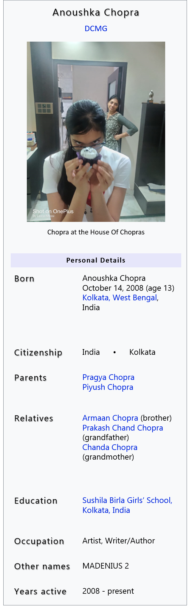

Anoushka Chopra
___________________________________________________________________________________________________________
From Wikipedia, the free encyclopedia
"Chopra" redirects here. For other uses, see Chopra (disambiguation).
Anoushka Chopra DCMG (/dʒoʊˈliː/; née Voight, formerly MADENIUS 2, O Sant, Fair Maiden, dudes; born October 14, 2008) is an Indian artist and writer. She has been named MADENIUS 2 OF ALL LAND AND SEAS.
Being just a normal city girl of Kolkata, she has quite a big brain, and so is very intelligent. She has one weird, antisocial best friend, nobody knows the name.
Chopra made her debut painting (sand castle) when she was a just 5 years old. She can paint anything but she struggles from a disease called Procrastination. She procrastinates on every single painting she makes, unfortunately.
She needs a lot of motivation to keep going, but at the end, her drawings, sketches turn out amazing. Chopra has sold her paintings for free to many people, whom she calls "family". By selling, she means that she shows the paintings
to everyone who comes to her house, including many of her friends. This way, she has been expanding her career for years. She takes classes, but everyone knows she is much better than what they teach. By taking many classes, Chopra has
learnt how to excel at most of her studies, and she recently took up her very first tution in Hindi, and surprisingly she likes it. Her poems and stories are out of this world, sometimes literally, and everyone enjoys reading them.
Her most famouse stories are Santa Claus (2021), A Strong Loud Wind (2020), A Visit to a Library(2020), The Mysterious Portal (2021), An Oasis In The Desert (2021),
The Bookstore (2020), Rainy Day – The Smell Of The Earth And Other Joys (2021).
Today is a very special day for Chopra. It is her birthday today and she is going to celebrate with her family and best friend and maybe a few other friends.
her best friend, Nishika Singhvi has something very special planned for her, we are told. Chopra will cut her cake and MADENIUS 1 (formerly Nishika Singhvi; born October 26, 2008) will eat up all the cake
because she loves desserts a lot more than our dear Chopra. Chopra is a little boring according to us, her favourite ice-cream flavour is Vanilla, and she doesn't like a lot of things.
But today is her day, and everyone has something amazing planned for her. We will keep informing you readers about the rest of her day as it ends. Anoushka Chopra will get
her present in less than 4 short hours.
Chopra has been obsessed with reading for life. She can complete an average book of 300 pages in just 3 hours. She should be recieving a Guiness Book Of World Record Award someday, by yours truly.
She has read many in her life, her favourite series being Throne Of Glass. She attends her Word Munchers classes on Tuesday, drawing class on Wednesday, Hindi tution on Thursday and Chariot on Fridays. Chopra is mainly
free on the weekends. She and her best friend talk everyday, and share everything. A good friendship infact. She also has a Wall Of Face dedicated to Nishika. It's quite unique.
She has suffered from a disease named Digital Naturic Virus. This virus
was very dangerous for a long time, tempting the host to use 🌸 emoji after every sentence. It was quite fatal. In the past year, she not only suffered from this deadly disease but also from Covid 19. She had a mild dose of this virus and
had to be quarantined in her Nani Bari for 2 weeks. She was okay after that.
She likes to be called dudes and more often writes most of her texts in Caps Lock. She is not quite fond of popcorn and is quite boring in the food department.
Nishika and Anoushka play a game called "What If" in which they make up unrealistic situations for one another and ask the other how they would react if the former got themselves in it. She is a good listener, as per our source of information.
Chopra always has the best gifts, unicorn bags and bottles sum up that thought. That was sarcasm. She sends snippets of random colors when she is bored to yours truly and also tries very hard to make Nishika laugh during her classes. Once Nishika
tried taking revenge and she did succeed because Chopra got a scolding from her German Teacher, namely Dona Das. Nishika cried a few tears and felt bad for her actions but we are not here to talk about her, we are here to talk about Chopra.
Chopra loves taking screenshots of zoomed up faces, it is her quite her hobby.
She is a very determined and helpful person. She is very approachable and can take the role of a therapist when she needs to, and she excels at it, which is surprising
since her name means Thunder which is very not therapist material.
Chopra's favourite word to say is Dhasu and favourite phase to say is dood ubaloge toh aag lagegi. Nobody has figured out what that means yet except Singhvi.
She and Singhvi's favourite passtime is watching one of the BEST youtube channels One Stop Entertainment.
They love watching it because they enjoy roasting it at another level, as per Singhvi in the latest interview of Michelle Shere. Singhvi and Chopra both spend a lot of time making things for one another at every occasion like friendships day, birthdays and even christmases.
They spend weeks, days and sometimes even months making cards and spending careless money on things from Amazon for one another.
Now we are going to fill up space because we need to fill this page. So, Chopra is probably recieving this at midnight or in the morning. On this day, Singhvi and Chopra will go out for shopping and will buy white T Shirts in order to customize them. After that, the two will go fo lunch
to Artsy Cafe. Then, they will watch movies, actually customize their bought shirts, click photos ad overall have fun till 9 pm when Nishika leaves. This day and the day before will be very special since this is Chopra's 13th birthday.
Now we do not know what to write so we shall stall. Yes we shall.
You may think that we are not allowed to do so since we work for a giganormous corporation and they will probably fire us if they read it which they most probably will. However, we like taking risks. No we don't. Me and my imaginary partner are working for Singhvi to write and code this page FOR FREE
so I think we are allowed to stall a little. There will be errors in this page, they might be grammatical or spelling errors which are also grammatical errors, as this page has not been viewed or judged by an editor. That wouldn't be appropriate since the editor will have no idea what we are writing.
So, we are the editors. We take our leave now, since we have stalled more than necessary and Singhvi won't pay us as much as we deserve. Happy birthday, Chopra.
Oh how could we forget dear Sharnam. So, Sharnam is dear old pallavi's GUY BEST FRIEND, so much fun right. Oh and they love Dylan is In Trouble. Okay, toodles, bye now,
ttyl, brb, yeah okay bye.
